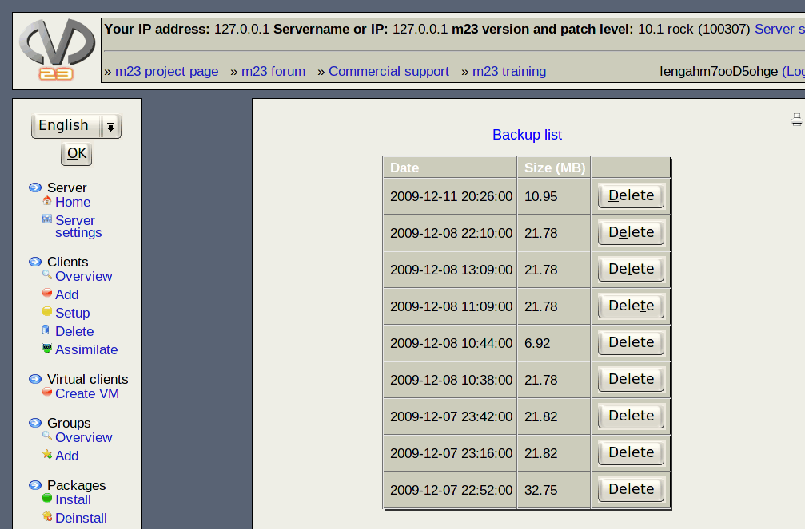

Here you can see the list of backups of this m23 server that are currently stored on its hard disk. Each entry presents a backup and shows its size and creation date.

Click on "Delete", if you want to delete a backup.
Subsections
dodger
2014-01-22